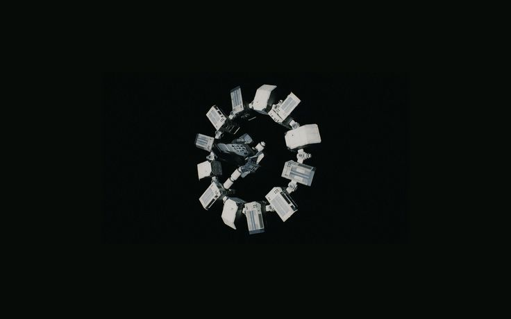
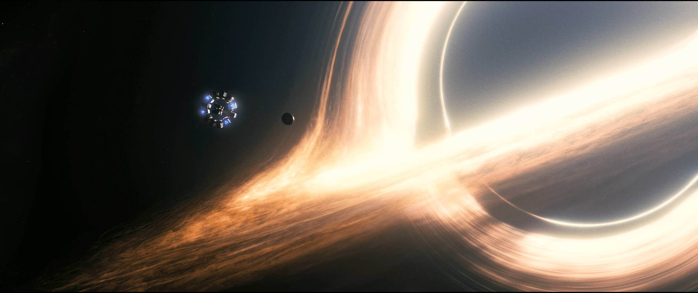
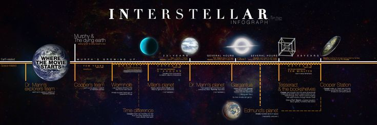
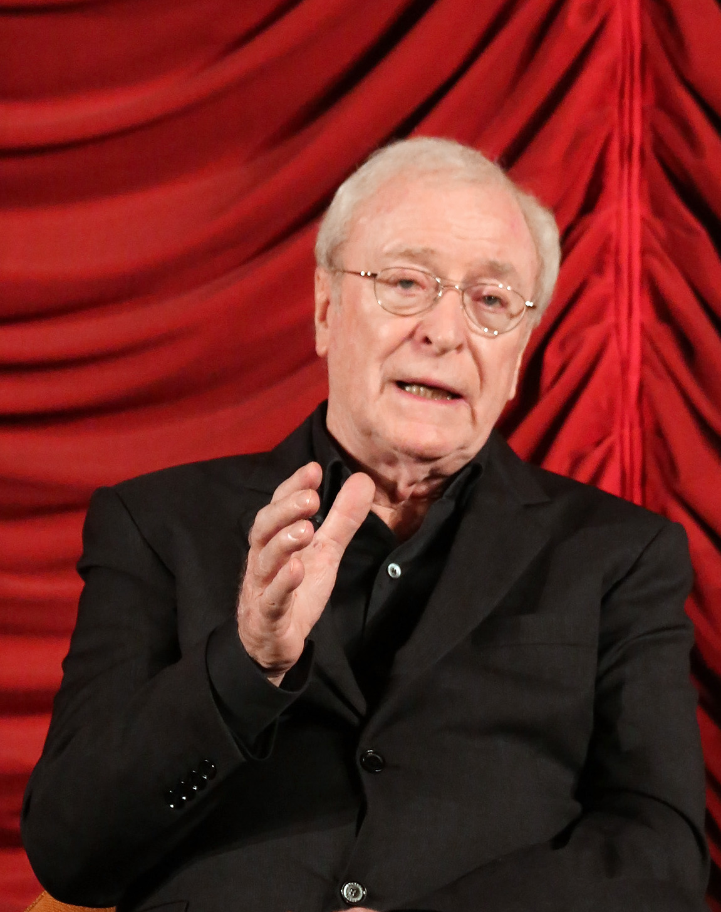
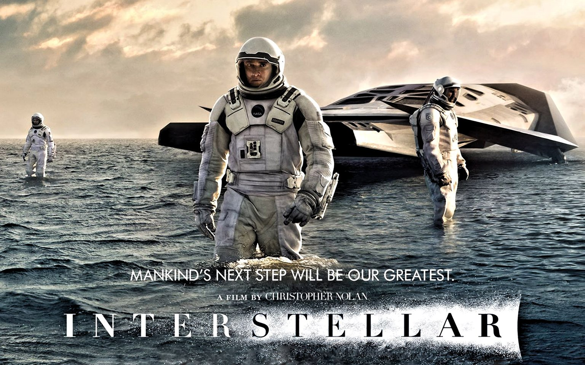
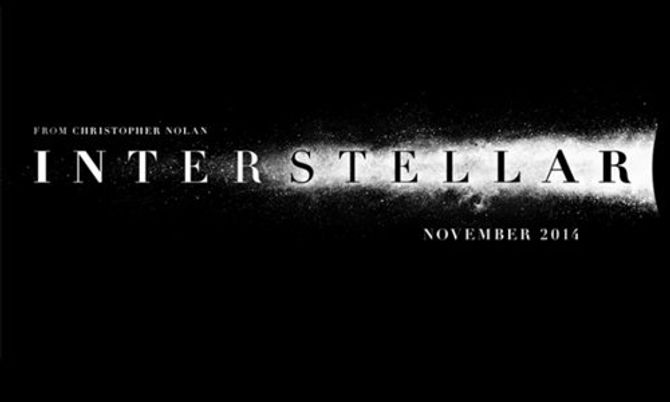

Viaja más allá de las estrellas
Bienvenido a Interestellar
En esta página descubrirás la épica aventura de la película Interestellar. Viajaremos junto a la tripulación de la nave Endurance a través de agujeros negros, planetas desconocidos y fenómenos que desafían el tiempo y el espacio. Explora los secretos de Gargantua, los mundos visitados y revive la emoción del trailer de la película.
La nave Endurance

La Endurance es la nave interestelar diseñada para soportar largos viajes a través del espacio profundo. Su misión: encontrar un nuevo hogar para la humanidad. La nave cuenta con tecnología avanzada, módulos de hibernación y sistemas de navegación capaces de enfrentar agujeros negros y planetas desconocidos.
Dato curioso: Cada parte de la nave fue inspirada en ingeniería real para lograr un diseño verosímil y funcional.
Gargantua

Gargantua es un agujero negro supermasivo con una gravedad tan intensa que deforma el tiempo alrededor de él. Sus efectos visuales y científicos fueron diseñados con la ayuda de expertos en física teórica.
Curiosidad: La película mostró de manera realista la dilatación temporal cerca de Gargantua, mostrando cómo el tiempo se ralentiza para los que están cerca del agujero negro.
Planetas Visitados

Durante la misión, la tripulación visita planetas con condiciones extremas: océanos gigantes, planetas helados y mundos con gravedad intensa. Cada planeta representa un desafío diferente para la supervivencia y la exploración.
Dato interesante: La precisión científica de cada planeta fue revisada por físicos reales para reflejar fenómenos posibles en el universo.
Trailer de Interestellar
Frases Épicas de Interestellar
- "No podemos elegir de dónde venimos, pero podemos elegir a dónde vamos." – Cooper
- "El amor es lo único que trasciende el tiempo y el espacio." – Amelia Brand
- "Nunca dejes que la esperanza se apague." – Murph
- "No estamos hechos solo para sobrevivir, estamos hechos para explorar." – Cooper
- "A veces el sacrificio es necesario para un bien mayor." – Profesor Brand
- "La humanidad debe mirar hacia las estrellas, no hacia los pies." – Cooper
- "El tiempo es relativo, pero el amor es universal." – Amelia Brand
- "Nunca subestimes el poder de la curiosidad humana." – Profesor Brand
- "Cada decisión cuenta, incluso las que parecen pequeñas." – Murph
- "El futuro de la humanidad depende de nuestra valentía hoy." – Cooper
Frases de Científicos en Interestellar
- "Exploramos porque no nos conformamos con lo que conocemos." – Profesor Brand
- "La ciencia nos permite mirar el universo con ojos nuevos." – Amelia Brand
- "El conocimiento es la clave para la supervivencia de la humanidad." – Profesor Brand
- "Cada descubrimiento nos acerca a comprender nuestro lugar en el cosmos." – Científico no identificado
- "La curiosidad humana es la chispa que enciende la exploración." – Profesor Brand
- "Sin riesgo, no hay avance científico." – Cooper
- "La física es nuestro mapa en el viaje hacia lo desconocido." – Profesor Brand
- "El universo no espera; debemos actuar con precisión y valentía." – Amelia Brand
- "Incluso los cálculos más complejos no reemplazan la intuición humana." – Científico no identificado
- "El futuro depende de cómo usamos la ciencia hoy." – Profesor Brand
Actores Principales de Interestellar
Matthew McConaughey – Cooper
Cooper es un piloto e ingeniero agrícola que se une a la misión para salvar a la humanidad. Su historia combina valentía, amor paternal y sacrificio. Cooper es quien lidera la nave Endurance y enfrenta los desafíos del espacio y la dilatación temporal.
Dato curioso: Matthew se entrenó con expertos en vuelo y simuladores espaciales para representar con realismo a Cooper.
Anne Hathaway – Amelia Brand
Amelia Brand es científica, astronauta y especialista en planetas habitables. Su personaje combina la pasión científica con la empatía y el amor, enfrentando decisiones críticas sobre la misión y sus compañeros.
Dato curioso: Anne estudió física y astronomía básica para interpretar mejor los conceptos científicos de la película.

Jessica Chastain – Murph
Murph es la hija de Cooper y una brillante científica que trabaja para resolver la ecuación de la gravedad. Su personaje representa la esperanza, la inteligencia y la determinación de la humanidad frente a la adversidad.
Dato curioso: Murph fue inspirada en la idea de que las nuevas generaciones podrían salvar a la humanidad a través de la ciencia.

Michael Caine – Profesor Brand
Profesor Brand es el mentor de la misión, científico experto en gravedad y encargado de preparar la ecuación que permitirá a la humanidad abandonar la Tierra. Representa la sabiduría, la paciencia y el sacrificio en pos del bien mayor.
Dato curioso: Michael Caine aportó la voz de la experiencia y la calma, siendo un pilar de realismo en la película.
Importancia de Interestellar y Aporte Científico

Interestellar no es solo una película de ciencia ficción, sino también un puente entre la ciencia y la narrativa cinematográfica. La película mostró conceptos complejos como la relatividad, los agujeros negros y la dilatación temporal de manera visualmente impresionante y comprensible para el público.
Aporte científico: Consultores de física y matemáticas reales ayudaron a crear visualizaciones precisas de fenómenos como Gargantua, el agujero negro supermasivo, y los efectos gravitacionales en los planetas cercanos. Esto inspiró a millones de personas a interesarse por la ciencia y la exploración espacial.
Su importancia radica en mostrar cómo la curiosidad, la investigación y la cooperación científica pueden guiar a la humanidad hacia el futuro, incluso frente a retos extremos.
Gracias por viajar con nosotros

Has explorado los secretos del universo junto a la tripulación de la Endurance, descubierto planetas misteriosos, enfrentado agujeros negros y conocido a los héroes que hacen posible la misión.
Recuerda que la curiosidad, la ciencia y el amor por lo desconocido son lo que nos impulsa a seguir adelante. Cada estrella que miras tiene una historia, y tú ahora eres parte de este viaje épico.
Nos vemos en las estrellas…